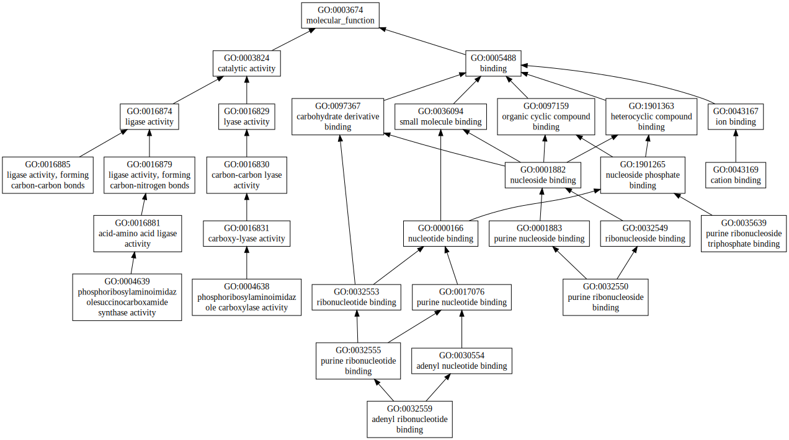
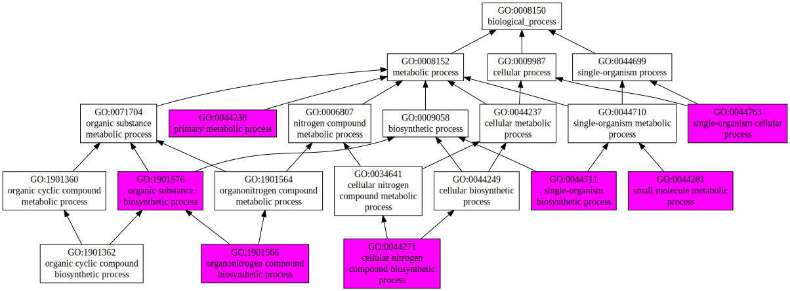
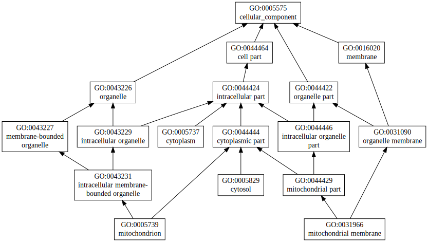

|

|
| GO term | CscoreGO | Name |
| GO:0016874 | 0.19 | ligase activity |
| GO:0016879 | 0.14 | ligase activity, forming carbon-nitrogen bonds |
| GO:0035639 | 0.06 | purine ribonucleoside triphosphate binding |
| GO:0032559 | 0.06 | adenyl ribonucleotide binding |
| GO:0032550 | 0.06 | purine ribonucleoside binding |
| GO:0016881 | 0.06 | acid-amino acid ligase activity |
| GO:0004639 | 0.05 | phosphoribosylaminoimidazolesuccinocarboxamide synthase activity |
| GO:0004638 | 0.05 | phosphoribosylaminoimidazole carboxylase activity |
| GO:0043169 | 0.04 | cation binding |
| GO:0016885 | 0.01 | ligase activity, forming carbon-carbon bonds |
| Download full result of the above consensus prediction. |
| Click the graph to show a high resolution version. |
| (a) | CscoreGO is the confidence score of predicted GO terms. CscoreGO values range in between [0-1]; where a higher value indicates a better confidence in predicting the function using the template. |
| (b) | The graph shows the predicted terms within the Gene Ontology hierachy for Molecular Function. Confidently predicted terms are color coded by CscoreGO: |
| | [0.13,0.5) | [0.5,0.6) | [0.6,0.7) | [0.7,0.8) | [0.8,0.9) | [0.9,1.0] |
|
|
|

|
| GO term | CscoreGO | Name |
| GO:0044281 | 0.14 | small molecule metabolic process |
| GO:1901576 | 0.13 | organic substance biosynthetic process |
| GO:0044763 | 0.13 | single-organism cellular process |
| GO:0044711 | 0.13 | single-organism biosynthetic process |
| GO:0044237 | 0.13 | cellular metabolic process |
| GO:1901566 | 0.12 | organonitrogen compound biosynthetic process |
| GO:0044249 | 0.12 | cellular biosynthetic process |
| GO:0044238 | 0.12 | primary metabolic process |
| GO:0044271 | 0.11 | cellular nitrogen compound biosynthetic process |
| GO:1901362 | 0.08 | organic cyclic compound biosynthetic process |
| Download full result of the above consensus prediction. |
| Click the graph to show a high resolution version. |
| (a) | CscoreGO is the confidence score of predicted GO terms. CscoreGO values range in between [0-1]; where a higher value indicates a better confidence in predicting the function using the template. |
| (b) | The graph shows the predicted terms within the Gene Ontology hierachy for Biological Process. Confidently predicted terms are color coded by CscoreGO: |
| | [0.08,0.5) | [0.5,0.6) | [0.6,0.7) | [0.7,0.8) | [0.8,0.9) | [0.9,1.0] |
|
|
|

|
| Download full result of the above consensus prediction. |
| Click the graph to show a high resolution version. |
| (a) | CscoreGO is the confidence score of predicted GO terms. CscoreGO values range in between [0-1]; where a higher value indicates a better confidence in predicting the function using the template. |
| (b) | The graph shows the predicted terms within the Gene Ontology hierachy for Cellular Component. Confidently predicted terms are color coded by CscoreGO: |
| | [0.14,0.5) | [0.5,0.6) | [0.6,0.7) | [0.7,0.8) | [0.8,0.9) | [0.9,1.0] |
|
|
|